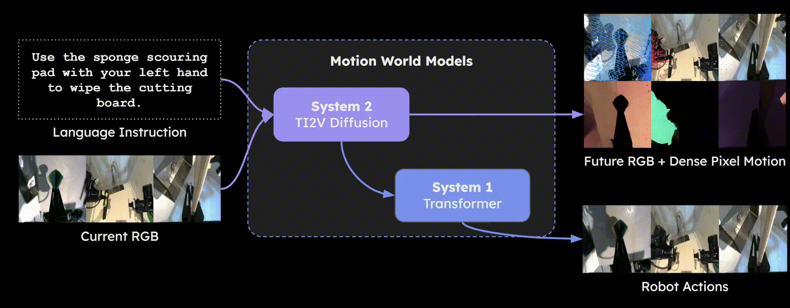

Abstract
Motion World Models (MWM) is a dual-system Vision–Language–Action (VLA) framework. It leverages a pretrained Image-Text-to-Video diffusion model as System 2 to jointly predict future RGB frames and dense pixel motion sequences. By explicitly modeling dense motion dynamics in addition to visual appearance, MWM provides richer predictive representations of future states. The action expert (System 1) substantially benefits from these motion-aware predictions, achieving improved performance compared to conventional World Models (WM) that predict RGB observations alone.
DAWN[1] is an instantiation of MWM, which is to appear at CVPR 2026.
Method
Predicting dense pixel motion is an intuitive way to guide robot control. Previous works like LangToMo[2], DAWN[1] have shown the great power of single frame dense motion prediction. We take a step further by using a pretrained Image-Text-to-Video diffusion model as System 2 to jointly predict future RGB frames and dense pixel motion sequences, which makes MWM a superset of WM.

Dense Pixel Motion
MWM jointly predicts future RGB frames and dense pixel motion sequences. The dense pixel motion encodes Optical Flow and depth change in HSV color space. Check the interactive visualization below for an example by moving the mouse over an image.
Move cursor over the dense pixel motion image
Major Advantages
Compute-Efficient
Training requires only consumer-grade hardware. Inference supports multiple views and two modalities in a single frame.
Better Motion Generation
Generates better Optical Flow compared to extracting it from World Models' prediction, (e.g. AVDC[3]).
More Informative
Jointly predicts depth changes, providing richer signals for improved robot control.
References
- Nguyen, E. R., Zhang, Y., Ranasinghe, K., Li, X., & Ryoo, M. S. (2025). Pixel motion diffusion is what we need for robot control. CVPR’26 [Project]
- Ranasinghe, K., Li, X., Nguyen, E. R., Mata, C., Park, J., & Ryoo, M. S. (2025). Pixel motion as universal representation for robot control. arXiv'25. [Paper]
- Ko, P. C., Mao, J., Du, Y., Sun, S. H., & Tenenbaum, J. B. (2023). Learning to act from actionless videos through dense correspondences. arXiv'23 [Project]